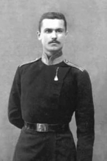

|  |
Виктор Афанасьевич Спиридонов (20 декабря 1882 - 7 сентября 1944) - создатель боевого искусства самоз(САМозащита), один из основателей самбо (причём он является автором самого термина "самбо"). Благодаря Спиридонову, приёмы джиу-джитсу под русскоязычными названиями в 1930 году были официально включены в Наставление по физической подготовке РККА и в аналогичные наставления для подготовки сотрудников рабоче-крестьянской милиции.
|